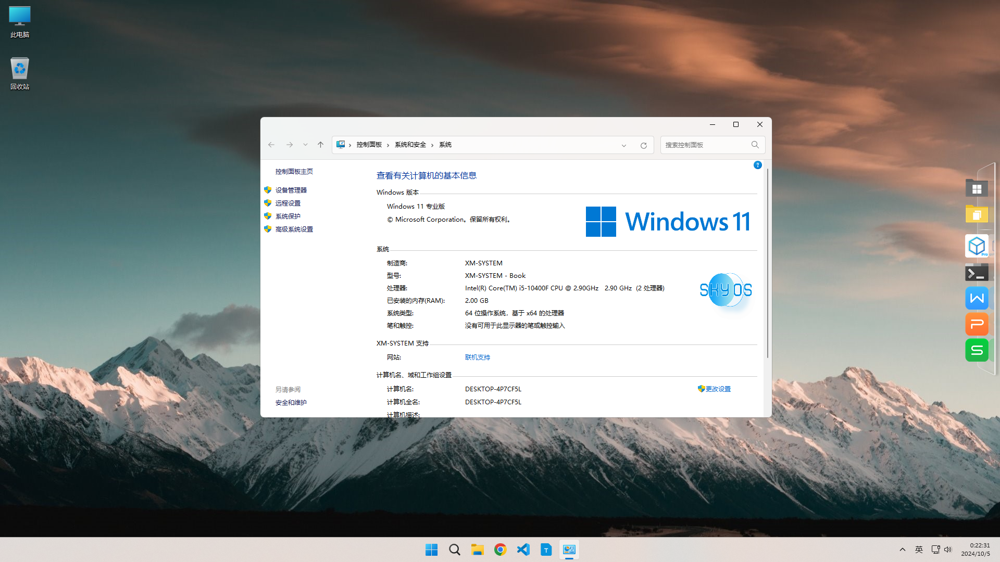

XM_Sky OS · 天空操作系统
XM_Sky OS 是一款简洁、高效、无广告、精简的Windows11操作系统
系统信息
- 系统信息: 使用Windows11 22h2 精简系统制作封装
- 封装时间: 2024-10-04
视频教程
系统软件
必要软件
- - 谷歌浏览器(上网必要)
- - potplayer(播放视频必要)
- - Bandizip(解压、压缩必要)
- - bandiview(看图软件)
程序编程
- - vscode(热门编辑器)
- - notepad--(文本编辑器)
- - windows终端(命令需要)
- - openssh(客户端连接)
辅助工具
- - XM BOX-Pro(工具箱)
- - StartAllBack(经典win)
- - PSD CODEC(psd预览图)
- - pixpin(截图工具)
更新日志
- - 升级截图工具和终端程序
- - 加入dock栏
- - 加入vscode
- - 加入pixpin
- - 加入psd预览图插件
- - 优化Windows状态栏
- - 首发版本，无更新信息